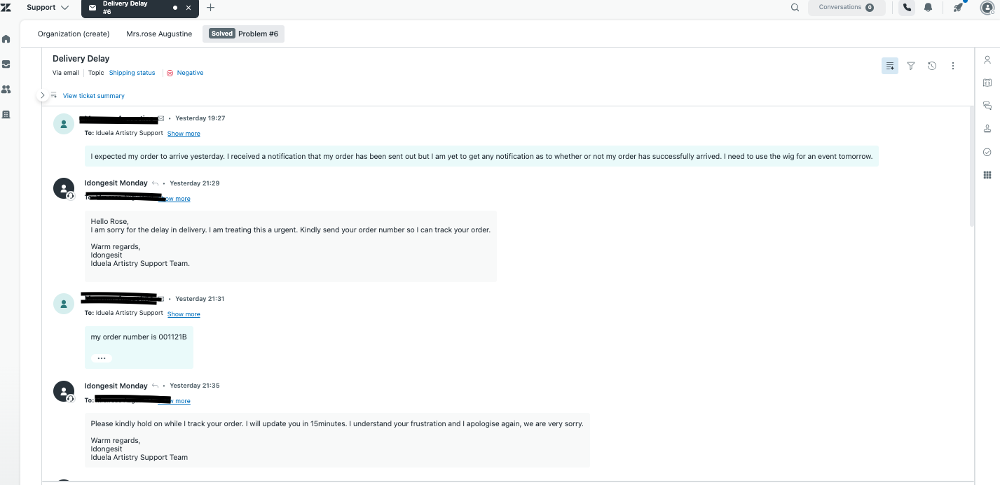
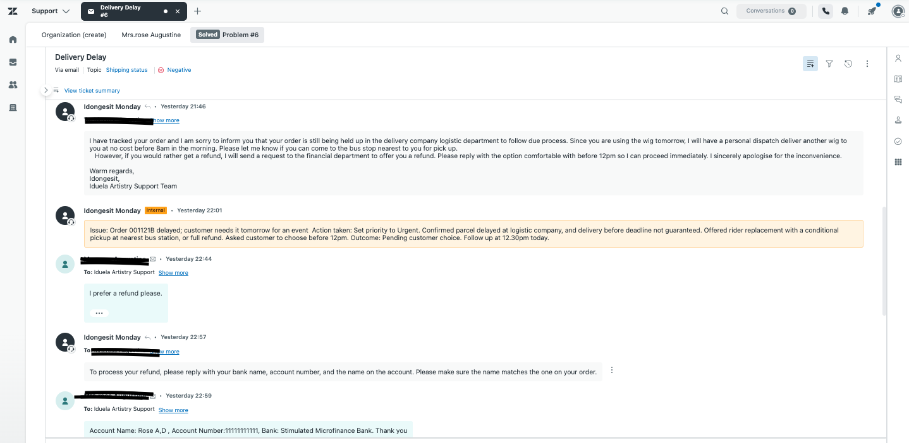
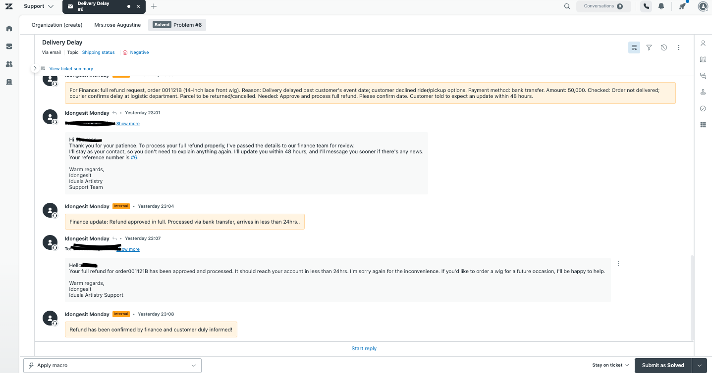
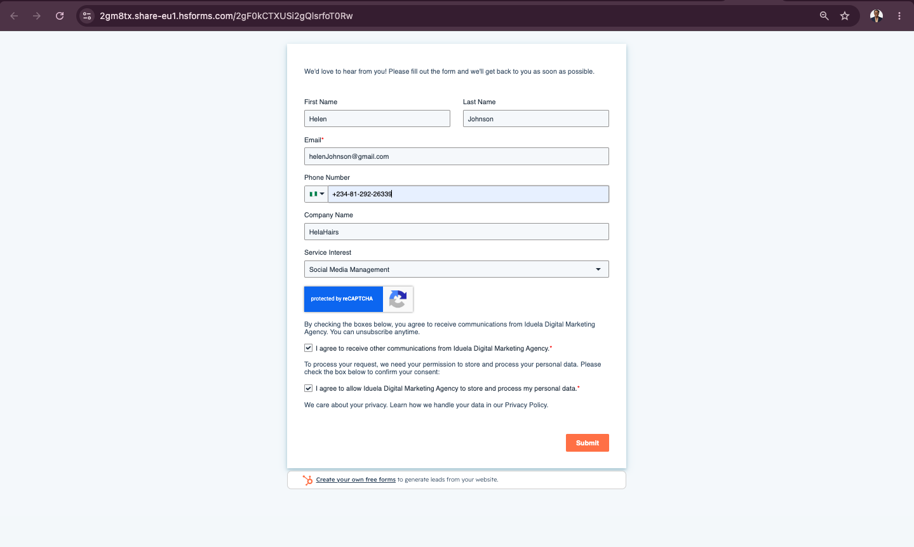
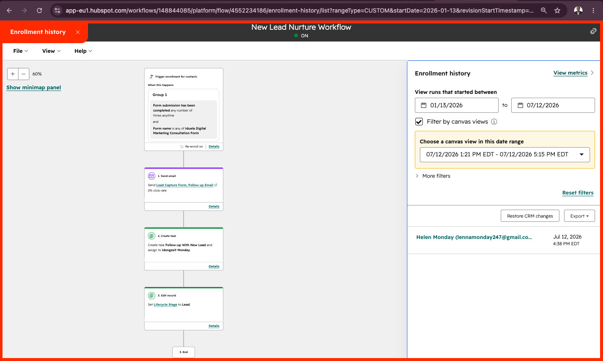
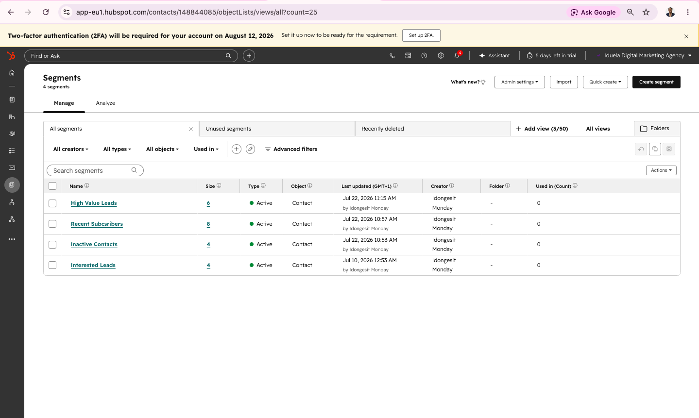
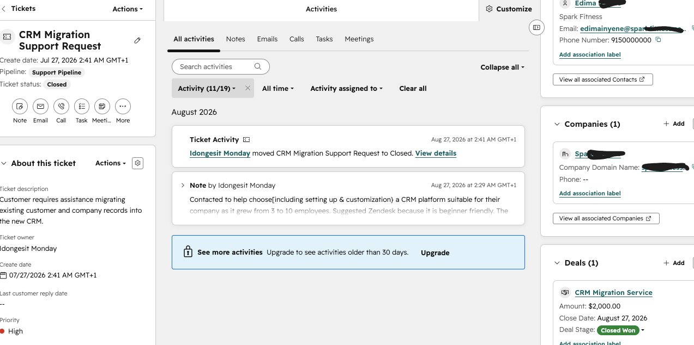
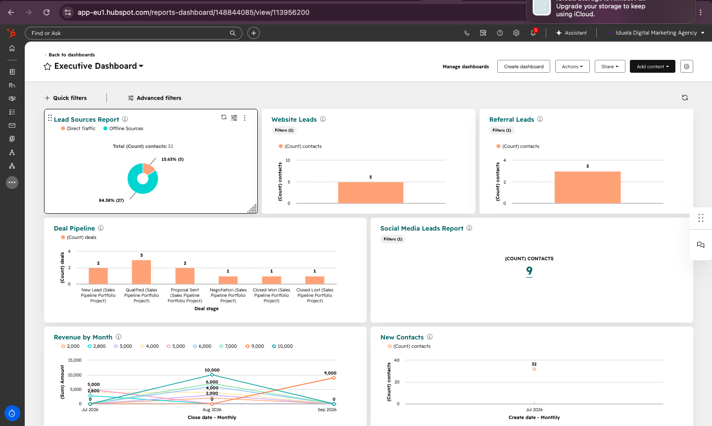

The situation
A growing business needs two things working together: a consistent way to answer customers when something goes wrong, and one place that holds everything it knows about its leads and customers. Without them, replies are inconsistent, serious complaints get buried, lead information is scattered and follow-up depends on memory.
My role
I set up both systems and tested them by working through realistic scenarios from start to finish.
The approach
Part A: Support desk for Iduela Artistry (Zendesk)
- Set up a Zendesk support desk named Iduela Artistry Support, using a dedicated support address.
- Wrote response templates for common situations, so tone and information stay consistent.
- Worked through 6 sample tickets, including one that combines a delayed order with a refund escalation.
- Applied the brand's refund policy (a 10% deduction) clearly and politely, with bank transfer as the refund method, which is typical for a Nigerian brand.
- Defined when a ticket gets escalated and what follow-up the customer receives.
Part B: CRM and support for Iduela Digital Marketing Agency (HubSpot)
- Built the CRM foundation: contacts and companies, custom properties (Service Interest, Lead Source, Customer Type), an import of sample records, and a data-quality check for duplicates and missing fields.
- Created a lead-capture form that feeds new contacts straight into the CRM.
- Organized contacts by lifecycle stage and built four segments (High-Value Leads, Inactive Contacts, Recent Subscribers, Interested Leads), then sent a targeted branding email to one segment.
- Built a six-stage sales pipeline (New Lead to Closed Won or Closed Lost) with sample deals.
- Automated the first response: when someone submits the form, a follow-up email goes out, an internal follow-up task is created and the lifecycle stage is updated.
- Created a ticket pipeline (New, Waiting on contact, Waiting on us, Closed) and worked sample tickets, such as a CRM migration support request, tracked by priority, owner and resolution.
- Built a dashboard so management can see leads, pipeline, revenue and support activity in one place.
The result
Every support ticket in both systems has a clear status, a consistent response and a documented resolution. The delayed-order-to-refund ticket shows how I handle an upset customer while staying inside company policy. The HubSpot environment ran end to end with about 32 contacts, 24 companies, 10 deals and 7 tickets, and each stage was tested (import, form, workflow, segments, pipeline, tickets, reports) before I marked it complete.
What I'd do next
Track response and resolution times, turn the most common questions into a help-centre page to reduce repeat tickets, and replace sample data with real activity so the dashboards show real trends.
Screenshots







